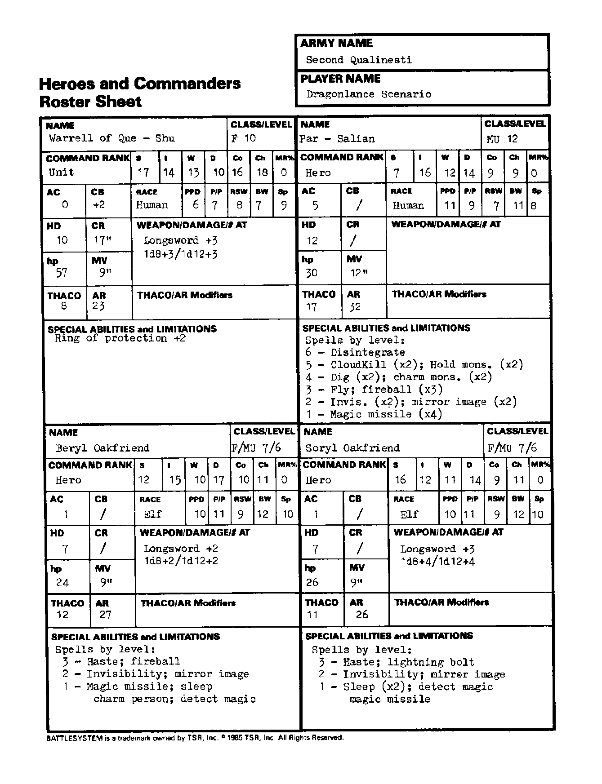

第二奎灵奈斯蒂 Second Qualinesti：英雄与指挥官（续）
能力值顺序：力量／智力／感知／敏捷／体质／魅力。五项豁免依次为麻痹·毒素·死亡魔法／石化·变形／法杖·法棒·魔杖／吐息／法术。移动与指挥半径以桌面英寸计；“—”表示原卡空白或不适用。武器两种伤害分别针对 S/M 与 L 目标；特殊多次攻击另行注明。
奎舒的沃雷尔 Warrell of Que-Shu
| 项目 | 数值 |
|---|---|
| 职业／等级 | 战士 10 |
| 指挥职级 | 部队 |
| 六项能力值 | 17/14/13/10/16/18 |
| 种族 | 人类 |
| 魔法抗性 MR | 0% |
| 护甲等级 AC | 0 |
| 指挥加值 CB | 2 |
| 五项豁免 | 6/7/8/7/9 |
| 生命骰 HD | 10 |
| 指挥半径 CR | 17 |
| 生命值 hp | 57 |
| 移动率 MV | 9 |
| THAC0 | 8 |
| 攻击等级 AR | 23 |
| 武器／伤害／攻击次数 | 长剑 +3；1d8+3／1d12+3 |
| 特殊能力、限制与准备法术 | 防护戒指 +2。 |
帕萨利安 Par-Salian
| 项目 | 数值 |
|---|---|
| 职业／等级 | 魔法师 12 |
| 指挥职级 | 英雄 |
| 六项能力值 | 7/16/12/14/9/9 |
| 种族 | 人类 |
| 魔法抗性 MR | 0% |
| 护甲等级 AC | 5 |
| 指挥加值 CB | — |
| 五项豁免 | 11/9/7/11/8 |
| 生命骰 HD | 12 |
| 指挥半径 CR | — |
| 生命值 hp | 30 |
| 移动率 MV | 12 |
| THAC0 | 17 |
| 攻击等级 AR | 32 |
| 武器／伤害／攻击次数 | — |
| 特殊能力、限制与准备法术 | 六级：解离；五级：死云×2、怪物定身×2；四级：掘土×2、魅惑怪物×2；三级：飞行、火球×3；二级：隐形×2、镜影×2；一级：魔法飞弹×4。 |
贝丽尔·橡友 Beryl Oakfriend
| 项目 | 数值 |
|---|---|
| 职业／等级 | 战士／魔法师 7/6 |
| 指挥职级 | 英雄 |
| 六项能力值 | 12/15/10/17/10/11 |
| 种族 | 精灵 |
| 魔法抗性 MR | 0% |
| 护甲等级 AC | 1 |
| 指挥加值 CB | — |
| 五项豁免 | 10/11/9/12/10 |
| 生命骰 HD | 7 |
| 指挥半径 CR | — |
| 生命值 hp | 24 |
| 移动率 MV | 9 |
| THAC0 | 12 |
| 攻击等级 AR | 27 |
| 武器／伤害／攻击次数 | 长剑 +2；1d8+2／1d12+2 |
| 特殊能力、限制与准备法术 | 三级：加速、火球；二级：隐形、镜影；一级：魔法飞弹、睡眠、魅惑人类、侦测魔法。 |
索里尔·橡友 Soryl Oakfriend
| 项目 | 数值 |
|---|---|
| 职业／等级 | 战士／魔法师 7/6 |
| 指挥职级 | 英雄 |
| 六项能力值 | 16/12/11/14/9/11 |
| 种族 | 精灵 |
| 魔法抗性 MR | 0% |
| 护甲等级 AC | 1 |
| 指挥加值 CB | — |
| 五项豁免 | 10/11/9/12/10 |
| 生命骰 HD | 7 |
| 指挥半径 CR | — |
| 生命值 hp | 26 |
| 移动率 MV | 9 |
| THAC0 | 11 |
| 攻击等级 AR | 26 |
| 武器／伤害／攻击次数 | 长剑 +3；1d8+4／1d12+4 |
| 特殊能力、限制与准备法术 | 三级：加速、闪电束；二级：隐形、镜影；一级：睡眠×2、侦测魔法、魔法飞弹。 |
兵力卡原图
